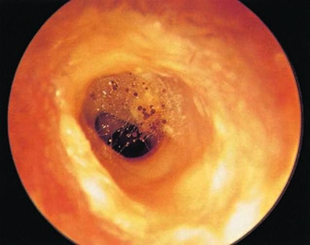

Сверка с PDF рубрикатора выполняется…
Грибковый отит
Клинические рекомендации от 25.10.2024 · взрослые и дети
Основные положения
- Отомикоз: грибковое поражение кожи ушной раковины, наружного слухового прохода, барабанной перепонки, барабанной полости или послеоперационной полости среднего уха. Основными возбудителями являются плесневые грибы Aspergillus и дрожжеподобные грибы Candida. Течение хроническое, рецидивирующее.
- Диагноз устанавливается только после выявления возбудителя: микроскопия и посев отделяемого из уха на грибы. Однократный отрицательный результат микоз не исключает.
- Лечение: тщательный туалет уха врачом и местные противогрибковые аппликации, при среднем отите и микозе послеоперационной полости — также противогрибковые препараты внутрь. Критерий излечения: клиническое выздоровление в течение месяца и отрицательное микологическое исследование.
- Госпитализация:
- осложнённый грибковый средний отит;
- лабиринтит;
- невозможность ежедневного туалета уха;
- нет эффекта амбулаторного лечения наружного грибкового отита за 5–7 дней.
Клиническая картина и классификация
Определение и формы
- грибковый наружный отит: плесневые или дрожжеподобные грибы на коже ушной раковины, стенках наружного слухового прохода, барабанной перепонке;
- грибковый мирингит: плесневые грибы на барабанной перепонке;
- грибковый средний отит: плесневые и дрожжеподобные грибы в барабанной полости;
- микоз послеоперационной полости среднего уха.
Синоним: отомикоз (ОМ).
- по локализации: наружный грибковый отит, грибковый мирингит, грибковый средний отит, грибковый средний послеоперационный отит;
- по возбудителю: плесневой, дрожжеподобный, смешанный;
- по течению: хронический.
Возбудители и предрасполагающие факторы
Основными возбудителями являются плесневые грибы рода Aspergillus и дрожжеподобные грибы рода Candida. Все возбудители условно-патогенные: заболевание развивается при наличии предрасполагающих факторов.
- аспергиллёз: 65% случаев;
- кандидоз: 30%;
- Penicillium, Mucor, Alternaria, Geotrichum, Cladosporium и другие грибы: до 5%;
- сочетанное поражение Aspergillus и Candida: 15% случаев.
Виды: Aspergillus niger, fumigatus, oryzae, flavus и другие; Candida albicans, tropicalis, krusei, glabrata, parapsilosis и другие; Penicillium notatum и другие.
- травма кожи при чрезмерной гигиене слухового прохода с удалением защитной серы;
- сахарный диабет: глюкоза в ушной сере повышается уже на ранних стадиях;
- соматические заболевания, нарушение обмена веществ, гиповитаминоз;
- длительная системная и местная антибиотикотерапия, кортикостероиды;
- иммунодепрессанты, лучевая терапия.
- длительное воспаление в полости с повреждением эпителия;
- травма уха, в том числе операционная;
- попадание нестерильной воды;
- влажность, запылённость, производственный контакт с антибиотиками.
Для грибкового отита характерно рецидивирующее течение.
Жалобы и анамнез
- жидкие выделения (кандидоз);
- корочки и пробки в слуховом проходе (аспергиллёз);
- зуд, боль, заложенность уха;
- в острой стадии иногда головная боль, лихорадка, болезненность раковины, заушной области и слухового прохода.
Слух не снижен или снижен незначительно по кондуктивному типу.
Грибковый средний отит- снижение слуха;
- выделения из уха;
- периодический зуд;
- возможны головокружения.
Течение длительное; обострения — выраженная боль, зуд, заложенность, выделения, головная боль, головокружение.
- начало и течение болезни, частоту и характер обострений;
- прежние отиты и микозы другой локализации;
- прежнее лечение и его эффект;
- лечение антибиотиками, кортикостероидами, иммунодепрессантами: длительность и интенсивность;
- производственные и бытовые условия, аллергологический анамнез.
Для отомикоза характерны учащение обострений и слабый эффект стандартного лечения.
Картина по возбудителю
| Возбудитель | Картина |
|---|---|
| Дрожжеподобные (Candida) |
|
| Aspergillus |
|
| Penicillium |
|
| Geotrichum capitatum |
|
В учебнике: заболевания наружного уха. Анатомия и физиология: наружное и среднее ухо, внутреннее ухо.
Диагностика
Диагноз основан на комплексе: жалобы, анамнез, физикальное, лабораторное и инструментальное обследование.
Отомикроскопия
- все пациенты: осмотр наружного слухового прохода, барабанной перепонки, барабанной полости и послеоперационной полости под микроскопом, отоскопом или торцевым эндоскопом.
- окрашенное отделяемое в слуховом проходе и (или) среднем ухе.
Диагноз «отомикоз» устанавливается только после выявления возбудителя.
| Форма | Отоскопические признаки |
|---|---|
| Кандидоз наружного слухового прохода |
|
| Аспергиллёз |
|
| Пенициллиоз |
|
| Грибковый средний отит |
|
| Микоз послеоперационной полости |
|
Отомикоз, вызванный Aspergillus niger

Микологическое исследование отделяемого из уха
- все пациенты: микроскопия отделяемого на дрожжевые и мицелиальные грибы, посев на дрожжевые и на мицелиальные грибы.
- частые обострения (1 раз в 2 месяца);
- противовоспалительная антибактериальная терапия неэффективна;
- характерная отоскопическая картина микоза.
После лечения проводятся контрольные исследования.
- материал берут аттиковым зондом или ложкой Фолькмана из глубоких отделов слухового прохода под контролем микроскопа, отоскопа или эндоскопа;
- помещают между двумя обезжиренными стерильными стёклами, микроскопия при увеличении ×100, ×200, ×400;
- микроскопия является наиболее информативным методом и надёжно определяет возбудителя;
- критерий микоза при посеве: титр грибов не менее 10⁴ КОЕ/мл.
Повторное исследование: однократный отрицательный результат не исключает грибковое заболевание, а единичный рост грибов в посеве не всегда означает микоз. Решающее значение имеют микологические методы, а не отоскопия.
Анализы крови
- затяжное и рецидивирующее течение: поиск сопутствующих и фоновых заболеваний.
- общий (клинический) анализ крови;
- биохимия: глюкоза, общий белок, АСТ, АЛТ, креатинин;
- антитела к ВИЧ-1 и ВИЧ-2;
- антитела к бледной трепонеме;
- HBsAg (гепатит B), антиген вируса гепатита C.
При поражении уха на фоне системных, в том числе инфекционных, заболеваний показаны консультация соответствующего специалиста и дообследование.
Лечение
Всем пациентам лечение начинают с элиминации возбудителя: противогрибковая терапия и тщательный туалет слухового прохода, барабанной или послеоперационной полости. Учитывают прежние эпизоды микоза и местные противогрибковые препараты.
Местную терапию начинают, не дожидаясь результатов посева.
Схема лечения отомикоза таблица 1 в тексте КР
| Локализация | Дрожжеподобные грибы | Плесневые грибы |
|---|---|---|
| Наружное ухо, местно | нафтифин 1% раствор + клотримазол 1% раствор | нафтифин 1% раствор + хлорнитрофенол 1% раствор |
| Среднее ухо, местно | нафтифин 1% раствор + клотримазол 1% раствор | нафтифин 1% раствор + хлорнитрофенол 1% раствор |
| Среднее ухо, внутрь | флуконазолoff-label, капсулы | итраконазолoff-label, капсулы |
| Послеоперационная полость, местно | нафтифин 1% раствор + клотримазол 1% раствор | нафтифин 1% раствор + хлорнитрофенол 1% раствор |
| Послеоперационная полость, внутрь | флуконазол, капсулы | итраконазол, капсулы, или тербинафинoff-label, таблетки (с 3 лет) |
Наружный грибковый отит
Кандидозный отит: аппликации 1% раствора клотримазолаoff-label и 1% раствора нафтифинаoff-label.
- по 5–10 минут 2 раза в сутки, 14 дней;
- затем ещё 14 дней после стихания клинических признаков и (или) до 3-кратного отрицательного анализа.
Возможны также миконазол, натамицин, эконазолoff-label.
Плесневые грибы: аппликации хлорнитрофенолаoff-label и 1% раствора нафтифинаoff-label на кожу слухового прохода.
- по 5–10 минут 2 раза в день, 10–14 дней;
- затем ещё 14 дней после стихания клинических признаков и (или) до 3-кратного отрицательного анализа.
Грибково-бактериальная ассоциация: применяют комбинированные ушные капли хлорамфеникол + беклометазон + клотримазол + лидокаинoff-label.
- по 4–5 капель 3–4 раза в день, 10 дней; детям с 6 лет.
Грибковый средний отит и микоз послеоперационной полости
Candida: помимо местного лечения назначают противогрибковый препарат внутрь — флуконазолoff-label в возрастной дозе.
Плесневые грибы: назначают итраконазол или тербинафин внутрь; местная терапия — как при наружном грибковом отите.
- флуконазолoff-label: внутрь 50–100 мг 1 раз в сутки, 14 дней;
- итраконазолoff-label: внутрь 200 мг 1 раз в сутки, 10–14 дней;
- тербинафинoff-label: внутрь 250 мг в сутки, 16 дней.
Возрастная группа в таблице 2 КР не указана. Детям флуконазолoff-label назначается в возрастной дозировке, конкретная доза в КР не приведена; тербинафинoff-label — с 3 лет (таблица 1 КР).
Критерий эффективности: полное клиническое излечение в течение месяца, подтверждённое клинической картиной и отрицательным микологическим исследованием.
Общая длительность противогрибковой терапии местного и (или) системного действия, по критериям качества КР, — 28 дней и более.
- нафтифин: фунгистатичен к Candida, фунгициден к плесневым грибам, есть противовоспалительный эффект, долго держит концентрацию в коже;
- хлорнитрофенол: противогрибковое и антибактериальное действие, в высоких концентрациях активен и против Proteus и синегнойной палочки;
- клотримазол: высокоспецифичен к Candida, преимущественно фунгистатичен.
Туалет уха
Перед местной терапией ухо тщательно очищают от отделяемого у всех пациентов.
Туалет уха выполняет только врач: аттиковым зондом и (или) ушным зондом с ватой, смоченной противогрибковым препаратом, или вакуум-экстрактором. Даже небольшое количество грибковых масс заметно удлиняет лечение.
Особенности- наружный отит: особенно передненижний отдел слухового прохода;
- средний отит: полностью удалить массы из области перфораций; при больших перфорациях промывание барабанной полости 0,01% раствором бензилдиметил-миристоиламино-пропиламмония;
- послеоперационный микоз: очищают всю неотимпанальную полость, особенно задний отдел за шпорой.
Препарат вводят в ухо на турунде: спиртсодержащие капли раздражают слуховой проход, а при среднем отите вызывают резкую боль, отёк слизистой, усугубление мукозита и грануляции. Турунда удлиняет действие препарата.
Хирургическое лечение
- полипы, грануляции: до медикаментозной терапии удаление или туширование 10% раствором нитрата серебра.
После туширования обязательна обработка местным противогрибковым препаратом, например нафтифином или хлорнитрофенолом.
Немедикаментозное лечение
Физиотерапия не рекомендуется. Следует ограничить воздействие пыли, газов и повышенной влажности; решающее значение имеет предотвращение попадания воды в ухо.
Алгоритм действий врача при грибковом отите
- 1
Пациент с подозрением на грибковый отит
Пациент жалуется на зуд, боль и заложенность уха, выделения из уха, при грибковом среднем отите также на снижение слуха. Течение длительное, с частыми обострениями и слабым эффектом стандартного лечения. Эти данные позволяют заподозрить отомикоз.
- 2
Диагностика
Диагноз основан на комплексе данных: жалобах, анамнезе, физикальном, лабораторном и инструментальном обследовании. Всем пациентам выполняют осмотр под микроскопом, отоскопом или торцевым эндоскопом. Общим признаком всех форм является окрашенное отделяемое в слуховом проходе и (или) среднем ухе.
Обязательно микологическое исследование отделяемого из уха: микроскопия на дрожжевые и мицелиальные грибы и посев. Диагноз отомикоза устанавливается только после выявления возбудителя.
- 3
Диагноз подтверждён?
Критерием микоза при посеве является титр грибов не менее 10⁴ КОЕ/мл. Однократный отрицательный результат микоз не исключает, а единичный рост грибов в посеве не всегда означает микоз, поэтому исследование при необходимости повторяют.
Подтверждён ли диагноз отомикоза?
- 4
Продолжение диагностического поиска в рамках других возможных заболеваний
конец алгоритмаВозбудитель не выявлен, диагноз отомикоза не подтверждён. Диагностический поиск продолжают в рамках других возможных заболеваний, при необходимости повторяя микологическое исследование. При затяжном и рецидивирующем течении ищут сопутствующие и фоновые заболевания (общий и биохимический анализы крови, глюкоза, антитела к ВИЧ, гепатитам B и C, бледной трепонеме).
- 5
Лечение в зависимости от локализации поражения
Лечение начинают с элиминации возбудителя: тщательного туалета слухового прохода, барабанной или послеоперационной полости, который проводит только врач, и противогрибковой терапии. Местное лечение начинают, не дожидаясь результатов посева. Препарат вводят на турунде, спиртсодержащие капли не применяют.
Выбор препаратов определяется возбудителем и локализацией. При кандидозе наружного уха применяют 1% раствор клотримазола и 1% раствор нафтифина, аппликации по 5–10 минут 2 раза в сутки в течение 14 дней. При плесневых грибах назначают хлорнитрофенол и 1% раствор нафтифина, аппликации 2 раза в день, 10–14 дней. При грибковом среднем отите и микозе послеоперационной полости дополнительно назначают противогрибковый препарат внутрь: флуконазол при Candida, итраконазол или тербинафин при плесневых грибах.
- 6
Повторное микологическое исследование
После лечения выполняют контрольное микологическое исследование отделяемого. Повторные посевы из уха проводят до микробиологического подтверждения элиминации возбудителя.
- 7
Терапия эффективна?
Критерием эффективности является полное клиническое излечение в течение месяца, подтверждённое клинической картиной и отрицательным микологическим исследованием. Общая длительность противогрибковой терапии составляет 28 дней и более.
Достигнут ли критерий излечения?
- 8
Диспансерное наблюдение
конец алгоритмаВсе пациенты с грибковым отитом наблюдаются у оториноларинголога: осмотр 1 раз в 3 месяца, при благоприятном течении 1 раз в полгода, в течение 2 лет. Профилактика включает правильный туалет слухового прохода и ушной раковины, коррекцию гликемии и общеукрепляющую терапию; важно предотвращать попадание воды в ухо.
Профилактика и диспансерное наблюдение. Показания к госпитализации
Показания к госпитализации
- осложнённые формы грибкового среднего отита;
- лабиринтит;
- невозможность ежедневного адекватного туалета слухового прохода;
- неэффективность адекватной амбулаторной терапии наружного грибкового отита в течение 5–7 дней.
Первичную помощь оказывают врачи общей практики и оториноларингологи первичного звена. Медицинская реабилитация не проводится.
Диспансерное наблюдение и профилактика
- все пациенты с грибковым отитом: осмотр оториноларинголога 1 раз в 3 месяца, при благоприятном течении 1 раз в полгода, в течение 2 лет.
- правильный туалет слухового прохода и ушной раковины;
- коррекция гликемии;
- общеукрепляющая терапия.
- динамическое наблюдение в течение 6 месяцев;
- курс профилактического лечения;
- смазывание кожи слухового прохода нафтифином или хлорнитрофенолом 1 раз в неделю в течение 4–6 недель.
Повторные посевы из уха выполняют до микробиологического подтверждения элиминации возбудителя.
Коды МКБ-10
Источник и актуальность
Журнал сверки
Неточности и противоречия в тексте рекомендации
- Существенных неточностей и противоречий, влияющих на диагностику и лечение, не найдено.